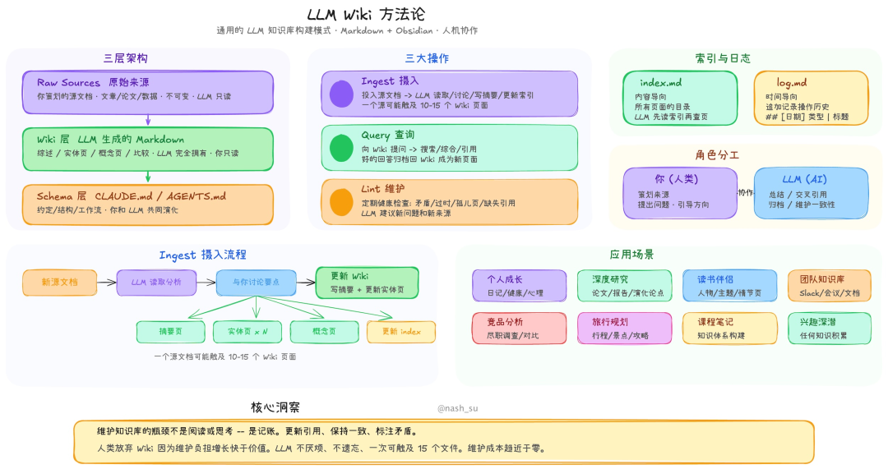
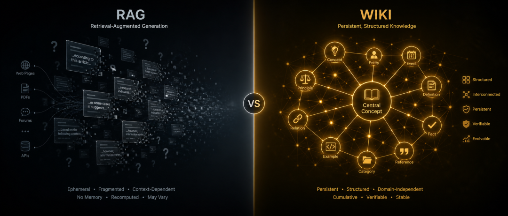
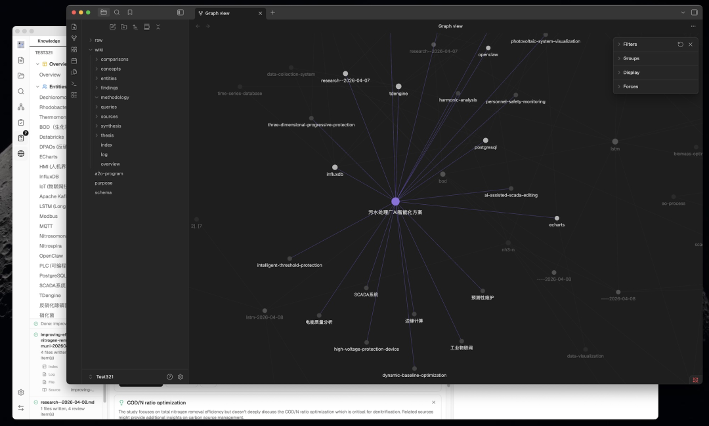
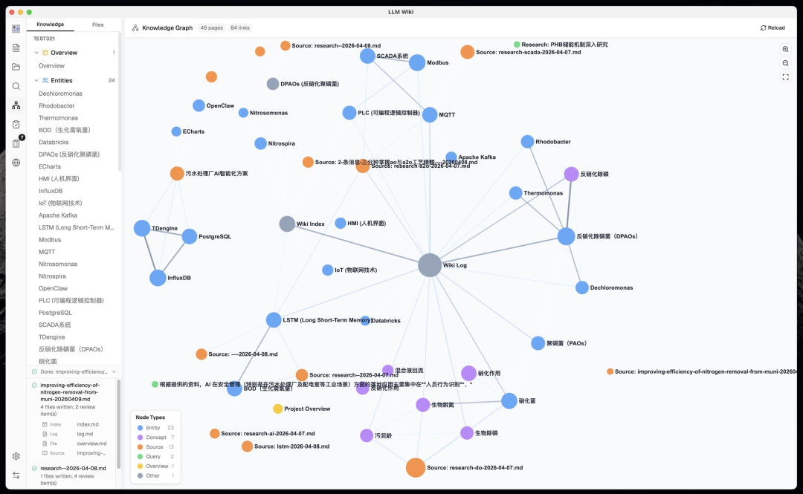
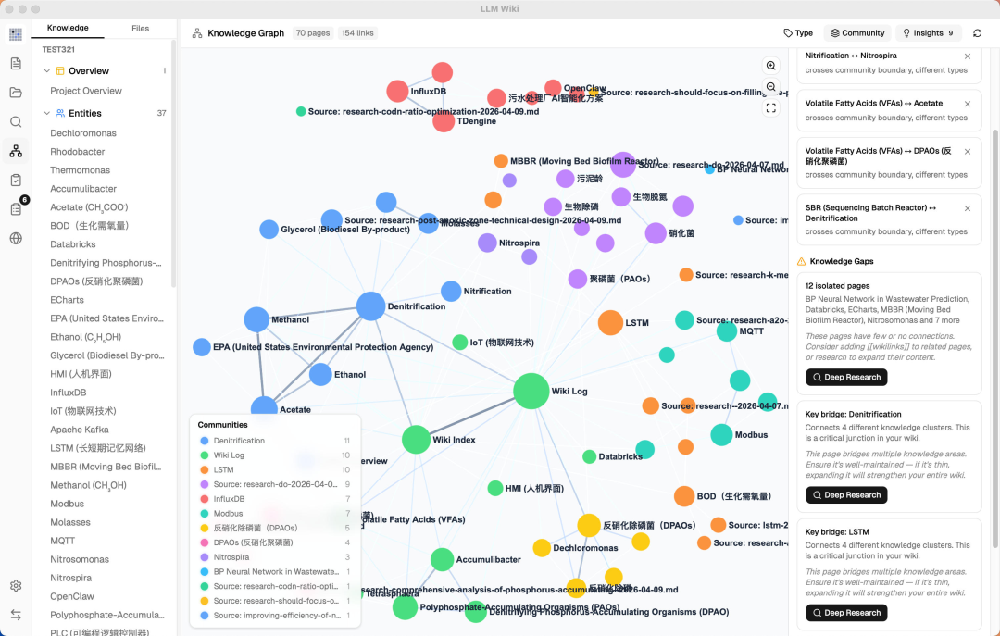
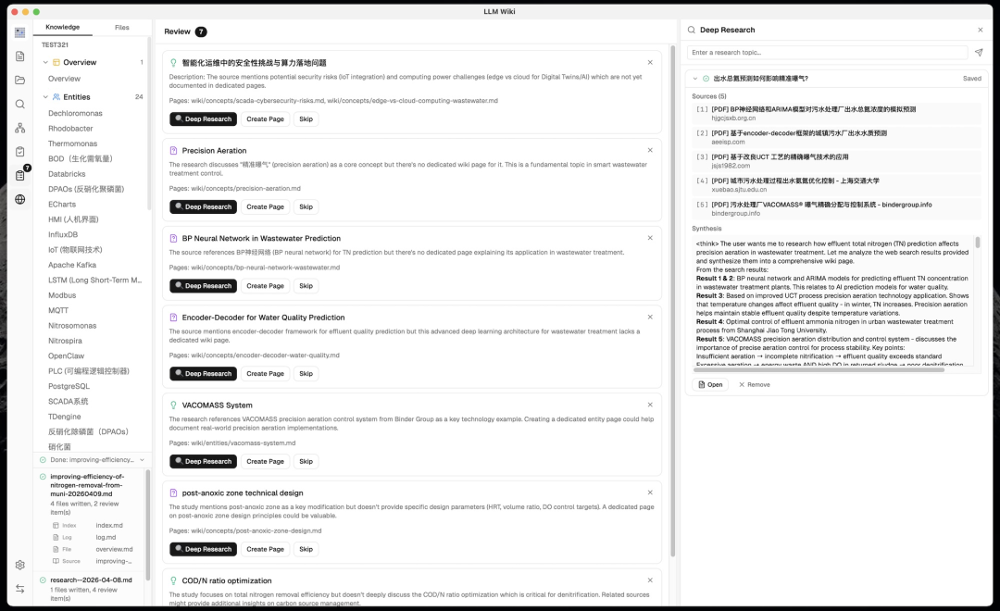
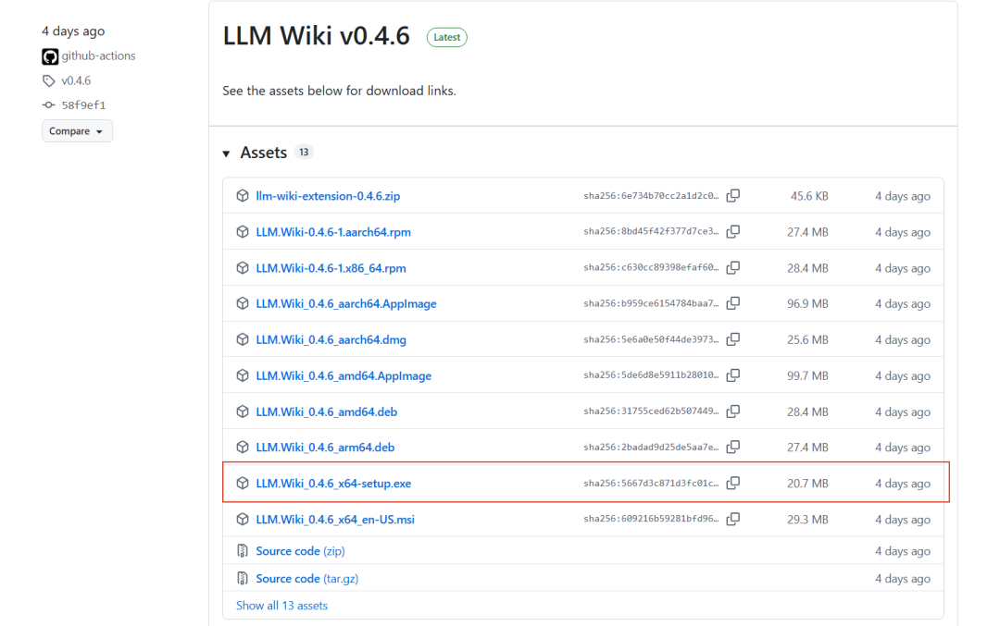
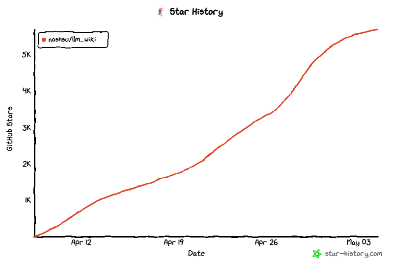

摘要：有个开源项目悄悄把 Andrej Karpathy 的 LLM Wiki 设计模式做成了全功能桌面应用，Stars 已经 5.8k+。它解决的不是"怎么问 AI 问题"，而是"怎么让 AI 帮你把知识真正积累下来"。
你有没有发现一个规律：用 RAG 搭的 AI 知识库，用了半年之后，跟第一天用起来感觉没什么区别？
文档还是那些文档，答案还是每次从零推理，知识没有在积累，连接没有在形成。你用得越久，反而越觉得它只是个"更贵的搜索引擎"。
这个问题 Karpathy 去年就想到了，他写了一篇设计文档，描述了一种完全不同的思路——用 LLM 持续构建并维护一个结构化的个人 Wiki。这篇文章和推文详细的介绍看这篇文章就行：👉【狂揽58.9k star，Karpathy一条推文，一个CLAUDE.md文件，让你的Claude Code聪明数倍。】
文档写的虽然很优雅，但是是基于抽象设计出来的，并没有实现，总感觉差一点意思。
直到这几天，我看到 LLM Wiki 这个项目。

RAG 和 LLM Wiki，本质上是两种不同的哲学
先把这个区别说清楚，因为理解了这个，后面所有功能都好理解了。
传统 RAG 的逻辑是这样的：
用户提问 → 向量检索相关段落 → LLM 基于段落临时生成答案 → 结束
每次对话都是从零开始，互相独立。知识没有积累，上下文没有沉淀，不管你用了多久，系统对你领域的"理解"不会比第一天更深。
LLM Wiki 的逻辑是另一套：
导入文档 → LLM 两步分析+生成 → 结构化 Wiki 页面持久存储
↓
用户提问 → 多相位检索（关键词+图谱扩展+可选向量）→ 基于已编译知识库回答
区别在于：知识是被"编译"过的。LLM 读完你的文档后，不是直接存下来备查，而是先消化、分析、生成结构化的 Wiki 页面——带 YAML frontmatter、带 [[wikilink]] 交叉引用、有来源追溯，然后这个 Wiki 会持续被维护和更新。
用得越久，Wiki 越丰富，知识网络越稠密，回答质量越高。这跟"用了半年感觉一样"的 RAG 是根本不同的产品。

两步思维链摄取：先分析，再生成
这是 LLM Wiki 对 Karpathy 原始设计最关键的工程改进之一。
Karpathy 的原始设计里，LLM 读完文档就直接写 Wiki 页面——一步到位。LLM Wiki 把这个过程拆成了串行的两个 LLM 调用：
第一步（分析）：
提取关键实体、概念、论点 识别与现有 Wiki 内容的连接点 发现矛盾和知识张力 给出 Wiki 结构建议
第二步（生成）：
基于分析结果生成带 frontmatter 的来源摘要页 生成实体页、概念页（含交叉引用） 更新 index.md、log.md、overview.md标记需要人工判断的 Review 项目
这个设计很合理——先让 LLM 想清楚再写，比边读边写质量好得多。另外还有 SHA256 增量缓存：文件内容没变就自动跳过，不浪费 token。

4 信号知识图谱：比向量相似度更聪明
这是我觉得技术含量最密集的部分。
它没有用单纯的向量相似度来判断页面之间的关联，而是建了一个带权重的知识图谱，用四个信号综合计算相关性：
[[wikilink]] | ||
这比纯向量检索要聪明：两篇都来自同一本书的页面，哪怕语义上看起来不相似，系统也知道它们之间的联系很强（来源重叠权重最高，×4.0）。
在图谱基础上还跑了 Louvain 社区检测算法，自动把你的知识库聚类——发现哪些内容自然成一组，并给每个聚类打"凝聚度分数"。低凝聚度的聚类会被标记，意思是这个知识领域的内容还比较松散，可以有意识地补充。

图谱洞察：知识库主动告诉你哪里有盲区
这个功能我觉得是整个产品里最有意思的设计理念。
系统会自动分析图谱结构，找出两类东西：
令人惊喜的连接：
跨社区的边（不同知识聚类之间意外相连的节点） 跨类型的链接（实体页连到概念页的非常规关联） 外围节点连到核心节点的意外联系
知识盲区：
孤立页面：连接少于 1 的页面，说明这个知识点还没有融入知识网络 稀疏社区：凝聚度低于 0.15 且有 3 个以上页面的聚类 桥接节点：同时连接 3 个以上知识聚类的关键节点
发现桥接节点或知识盲区之后，可以一键触发深度研究：系统读取你的 overview.md 和 purpose.md（你定义知识库目标的文件），让 LLM 生成针对你领域的专项搜索查询，调用 Tavily API 搜索，合成后自动入库。
整个闭环是：知识库自己发现自己哪里不够，然后去学习，然后把新内容消化进来。这个设计思路我认为是这个项目最接近 Karpathy 原始愿景的地方。

查询：多相位检索，不止是向量
LLM Wiki 的查询走四个阶段：
Phase 1：分词搜索英文按词切分+停用词过滤，中文用 CJK 双字符分词（"知识库" → ["知识", "识库", "库"]），标题匹配有额外加分。同时搜索 wiki/ 和 raw/sources/。
Phase 1.5（可选）：向量语义搜索通过 LanceDB（Rust 嵌入）存向量，走 cosine 相似度，找关键词搜索找不到的语义相关内容。官方给了个数据：开启向量搜索后，综合召回率从 **58.2% 提升到 71.4%**。不是必须的，但值得开。
Phase 2：图谱扩展以搜索结果为种子，用 4 信号模型找相关页面，支持 2 跳遍历。
Phase 3：预算控制可配置 4K 到 1M tokens 的上下文窗口，按 60% wiki 页面 / 20% 对话历史 / 5% 索引 / 15% 系统提示的比例分配。
这套检索逻辑组合起来，比单纯"向量找最相似"要全面得多。

技术栈：Tauri + React 19
桌面端用 Tauri v2（Rust 后端），前端 React 19 + TypeScript + Vite，UI 用 shadcn/ui + Tailwind CSS v4，知识图谱可视化用 sigma.js + graphology + ForceAtlas2。
文件格式支持得相当全：PDF、DOCX、PPTX、XLSX/XLS/ODS、图片、视频/音频，还有个 Chrome 插件一键剪辑网页入库（基于 Mozilla Readability.js + Turndown.js，效果比自己手动复制好很多）。
LLM 提供商支持 OpenAI、Anthropic、Google、Ollama 和自定义端点。本地模型的同学也能用，不强依赖云服务。
Wiki 目录完全兼容 Obsidian，会自动生成 .obsidian/ 配置文件，如果你已经是 Obsidian 用户，切换成本很低。
如何安装
预编译二进制文件
从 Releases 下载：
macOS： .dmg（Apple Silicon + Intel）Windows： .msiLinux： .deb/.AppImage

从源码构建
# 前置条件：Node.js 20+, Rust 1.70+
git clone https://github.com/nashsu/llm_wiki.git
cd llm_wiki
npm install
npm run tauri dev # 开发模式
npm run tauri build # 生产构建
Chrome 扩展
打开 chrome://extensions启用「开发者模式」 点击「加载已解压的扩展程序」 选择 extension/目录
快速开始
启动应用 → 创建新项目（选择模板） 进入 设置 → 配置 LLM 提供商（API 密钥 + 模型） 进入 资料源 → 导入文档（PDF、DOCX、MD 等） 观察 活动面板 —— LLM 自动构建 Wiki 页面 使用 聊天 查询你的知识库 浏览 知识图谱 查看关联 查看 审核 处理需要你关注的项目 定期运行 Lint 维护 Wiki 健康度
适合什么人？说实话
这个工具不是给所有人用的。上手有成本，需要你：
有一堆文档、论文、书籍、网页需要认真管理 愿意花时间初始化配置（LLM 提供商、purpose.md、schema.md） 接受知识库是逐渐积累的过程，不是导入完就立刻成型
如果你是以下场景，我觉得认真值得试试：
✅ 研究者/学生：大量论文需要管理，想建立自己的领域知识图谱
✅ 知识工作者：有大量行业资料，想要能"聊天"的知识库而不只 是文件夹
✅ Obsidian 重度用户：有维护 Vault 的习惯，想让 AI 自动维护 Wiki 内容
✅ 开发者：对 Karpathy 的 LLM Wiki 模式感兴趣，想要一个直接可用的完整实现
不太适合：只想随手问几个问题的普通用户，这种场景 ChatGPT 就够了，没必要为此搭一套知识库。
数据和状态
目前 GitHub Stars 5.8k+，Forks 700+，从 2026 年 4 月建仓，不到一个月已经发布了 23 个版本，迭代速度很快。最新是 v0.4.6（2026-05-01），还在活跃开发中。
有预构建包直接下载，macOS（ARM + Intel）、Windows（.msi）、Linux（.deb / .AppImage）都有，不需要自己编译，装 Node.js + Rust 再跑半小时 build。
项目地址：https://github.com/nashsu/llm_wiki

说一个我觉得这个项目最核心的洞见：知识不应该只是被检索，而应该被编译和积累。
RAG 解决的是"找得到"的问题，LLM Wiki 解决的是"真正懂了"的问题。这是不同层次的目标，不是竞争关系，但很多人把前者当成了后者的解法。
Karpathy 写那篇设计文档的时候说，他想要一个工具，能把他读过的所有东西编译成一个活着的 Wiki。这个愿景现在有了一个具体的实现。
你在用什么方式管理自己的知识库？是 RAG 方案、Obsidian、还是 Notion 之类的工具？欢迎评论区聊聊，或者直接去 GitHub 看看这个项目。
我是顾北，关注我，获取更多好玩有趣的开源仓库！
谢谢你阅读我的文章~
我们下期再见！
PS：本文部分内容由AI辅助创作